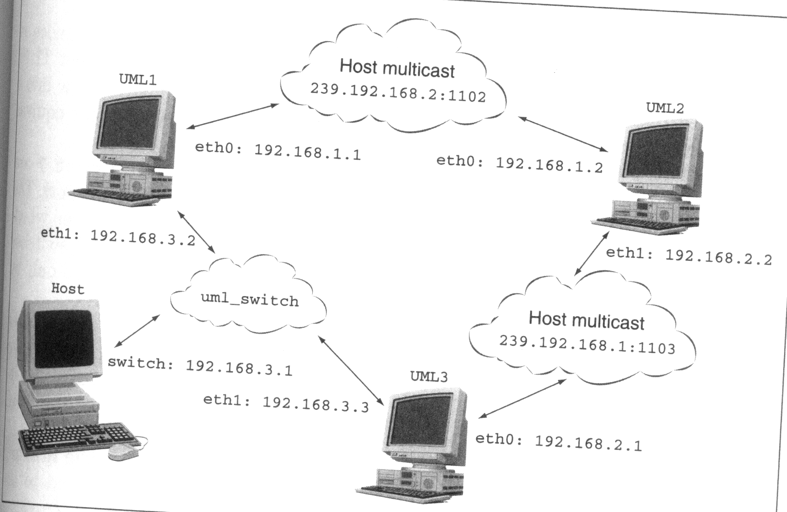

*uml_mconsole (consultar man):
$ uml_mconsole umlname config
dev=...
$ uml_mconsole umlname remove
dev
*tuntap (TUN/TAP controlado por uml_net): ethX=tuntap,tapdev,MAC,hostIP
*uml_switch (proceso que implementa un switch o hub virtual): ethX=daemon,MAC,unix,socketpath
$ uml_switch [-unix socketpath] [-hub] [-tap tapdev]
*multicast (red de multidifusión UDP para transmitir tramas entre UMLs como un hub): ethX=mcast,MAC,mcastIP,puerto,TTL
* Configuración de la capa de enlace para un anfitrión + 3 umls formando 3 redes + red externa:

$ uml_mconsole uml1 config eth0=mcast,82:a7:0e:8c:e4:10
$ uml_mconsole uml2 config eth0=mcast,82:a7:0e:8c:e4:20
$
uml_mconsole uml3 config eth0=mcast,82:a7:0e:8c:e4:30,239.192.168.2,1103
$ uml_mconsole uml2 config eth1=mcast,82:a7:0e:8c:e4:21,239.192.168.2,1103
$
uml_switch -tap tap0 # es necesario arrancar /etc/init.d/uml_switch
$
uml_mconsole uml1 config eth1=daemon,82:a7:0e:8c:e4:11
$ uml_mconsole uml3 config eth1=daemon,82:a7:0e:8c:e4:31
* Configuración del enrutamiento de los nodos de la red de forma que todos los nodos tengan conexión entre sí y con el exterior
$ echo 1 > /proc/sys/net/ipv4/ip_forward # activa el enrutamiento de un nodo (tanto si hace NAT como si no lo hace)
* Configuración del nodo uml3 (o uml1) para que haga SNAT al nodo uml2 de forma que todos los nodos tengan conexión entre sí y con el exterior. Para hacer SNAT tenemos dos opciones:
$ iptables -t nat -A POSTROUTING [ -o interfaz de salida| -s ip de origen | -d ip de destino ] -j MASQUERADE # para direcciones ip dinámicas
$ iptables -t nat -A POSTROUTING [ -o interfaz de salida| -s ip de origen | -d ip de destino ] -j SNAT --to-source ip de origen para el snat # para direcciones estáticas
* Configuración del nodo uml3 (o uml1) para que haga DNAT a algún servico a elegir del nodo uml2 de forma que todos los nodos tengan conexión entre sí y con el exterior. Para hacer DNAT:
$ iptables -t nat -A PREROUTING [-p protocolo [--dport puerto]] [ -i interfaz de entrada| -s ip de origen | -d ip de destino ] -j SNAT --to-destination ip[-ip][:puerto-puerto]